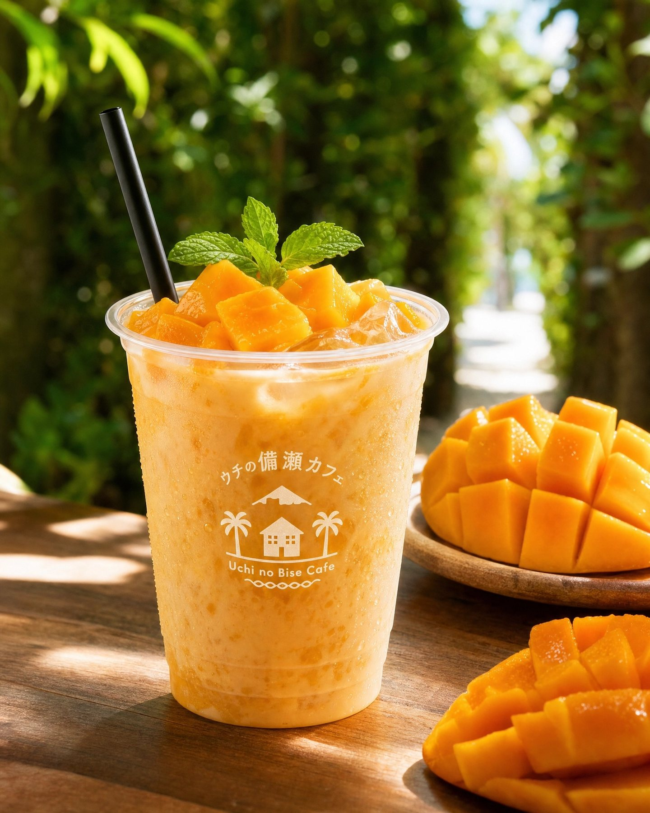
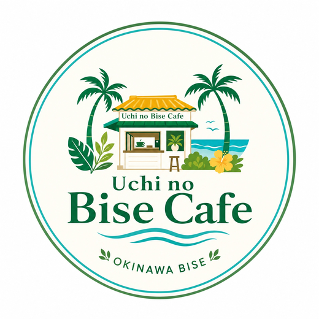
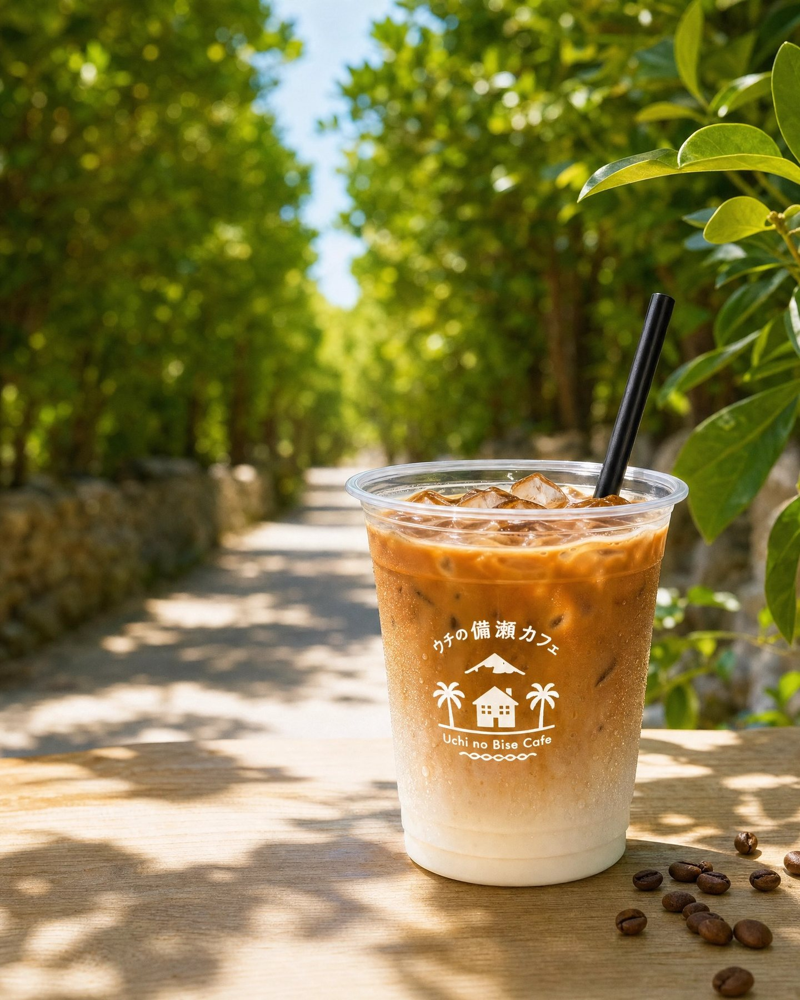
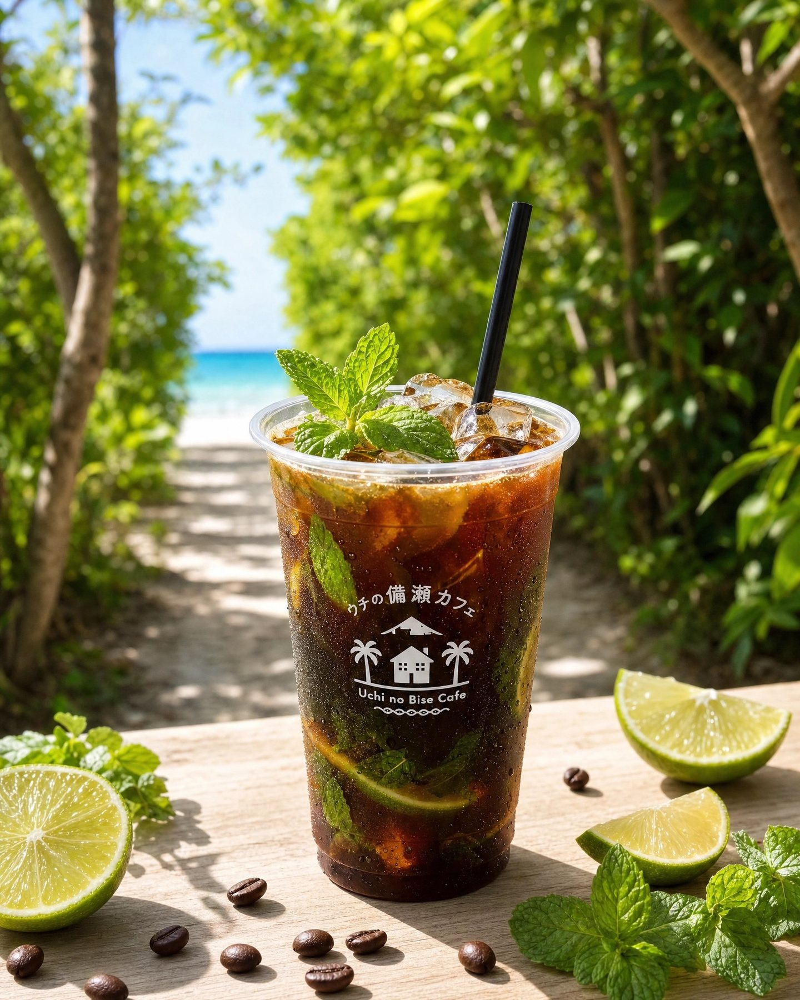
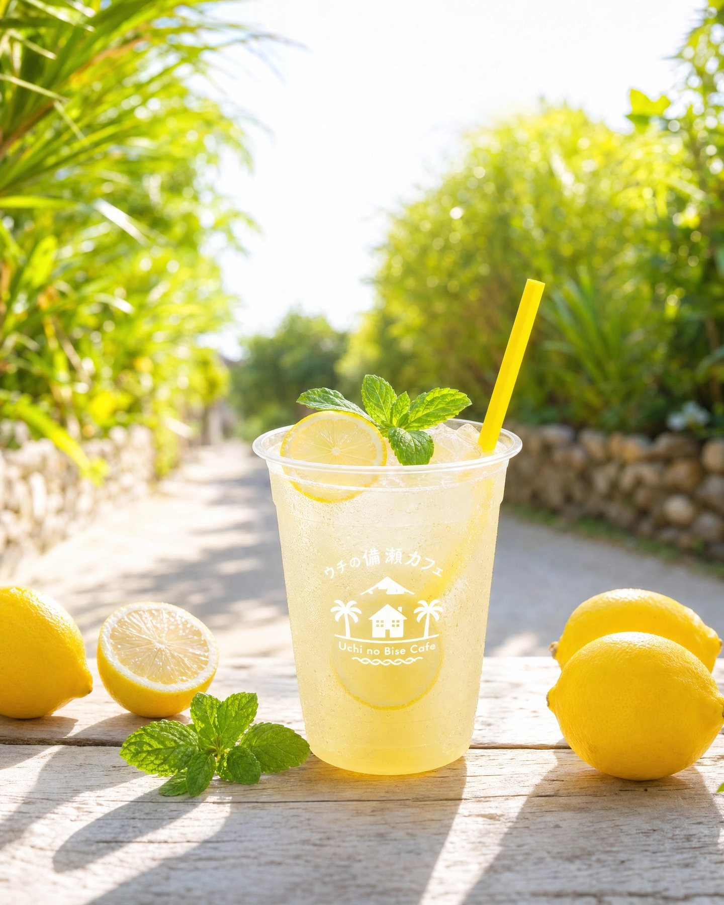
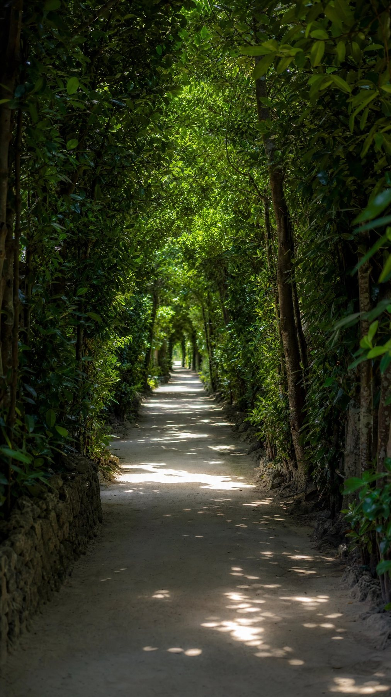
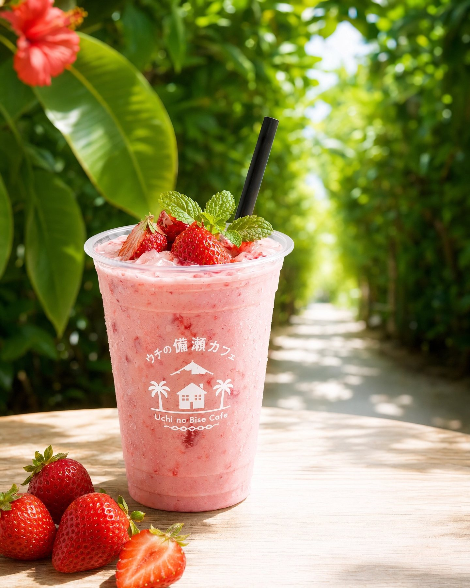
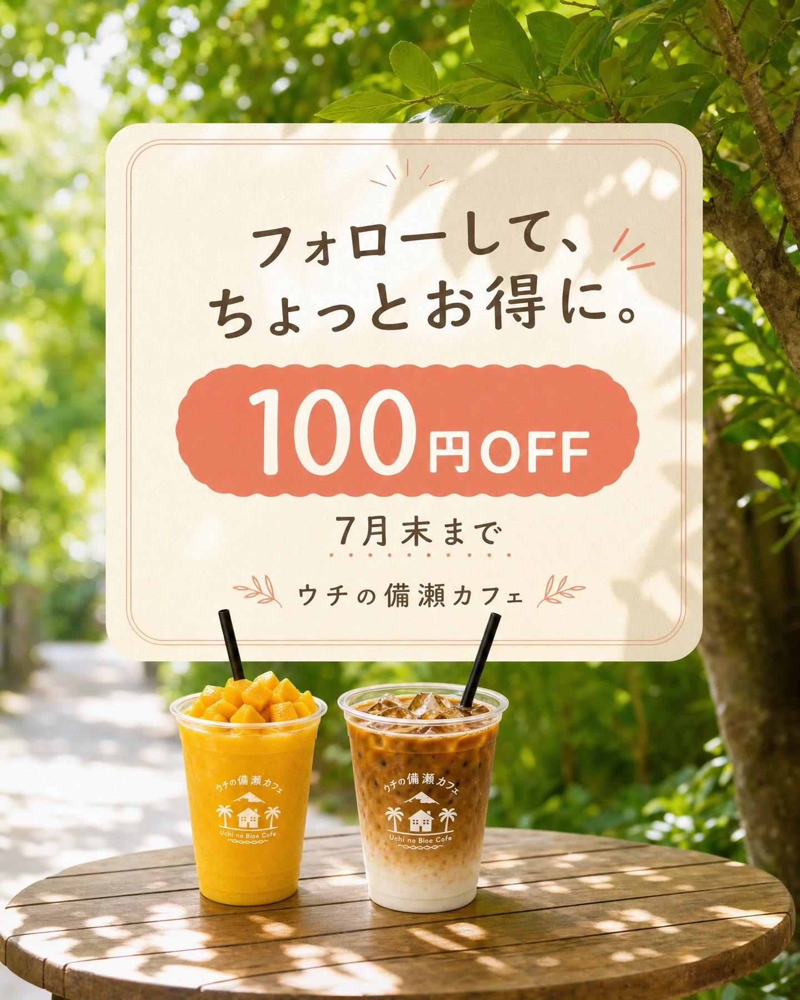
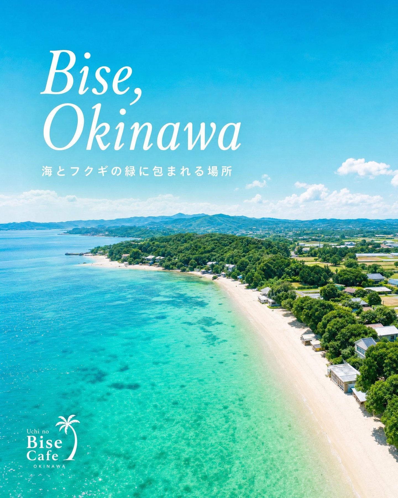

Signature
マンゴー×マンゴー
濃厚マンゴーをたっぷり使った、とろけるご褒美ドリンクです。

Uchi no Bise Cafe
2026年6月3日 OPEN
営業時間・臨時休み・キャンペーンはInstagramでお知らせしています。
About
備瀬のフクギ並木を歩いたあと、海へ向かう風を感じながら楽しめる南国ドリンクをご用意しています。マンゴー×マンゴーの濃厚な味わい、備瀬レモネードの爽やかさ、ウチカフェアイスコーヒーの香りまで。テイクアウトで、備瀬の時間をゆっくりどうぞ。

Signature
濃厚マンゴーをたっぷり使った、とろけるご褒美ドリンクです。

Coffee
やさしい甘さのカフェラテ。ミルクのまろやかさがうれしい一杯です。

Refresh
備瀬の太陽をたっぷり浴びた、すっきりリフレッシュできるドリンクです。




Access